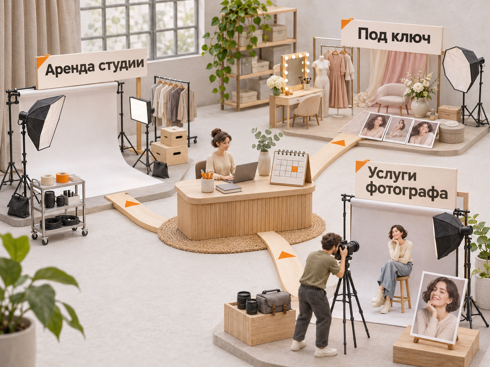
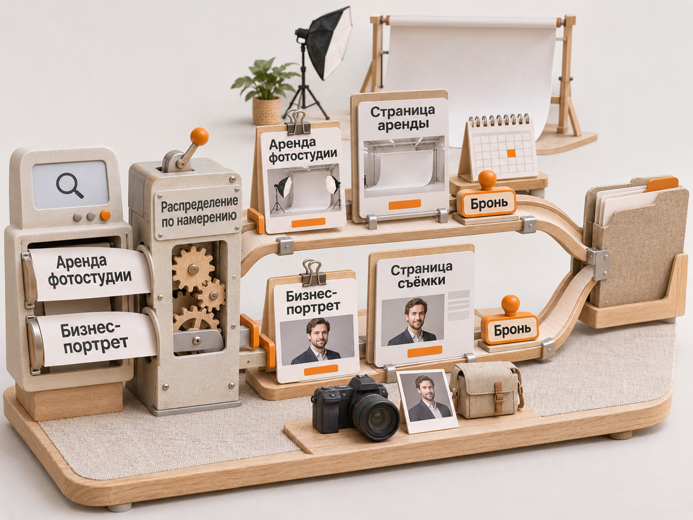
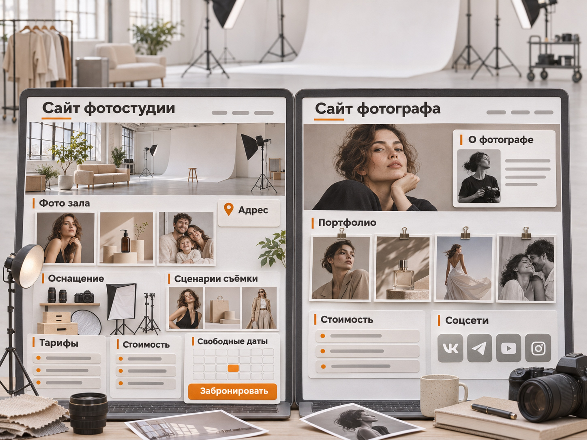
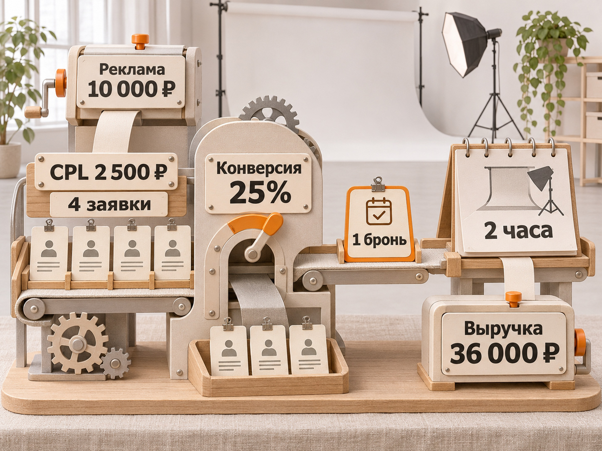

Блог о платном трафике
Продвижение фотографа и фотостудии в 2026 году: каналы, реклама и прогноз бюджета
Для привлечения клиентов фотографу или фотостудии в Москве я бы начал с рекламы по прямым запросам в Яндекс Директе, привёл в порядок карточку организации в Картах и подготовил отдельные страницы под разные услуги. SEO, ВКонтакте, Telegram и партнёрства подключал бы с учётом того, кому именно продаётся съёмка. Важно считать не переходы на сайт и даже не все обращения, а оплаченные бронирования и прибыль после расходов.
Для первого расчёта платной рекламы можно заложить стоимость обращения 1500-4000 ₽. Это условный рабочий диапазон для планирования теста дорогих услуг в Москве, а не подтверждённая средняя цена лида по рынку. За 60 000 ₽ рекламного бюджета при таких допущениях получится математически 15-40 обращений. Сколько из них превратится в брони, зависит от цены пакета, портфолио, посадочной страницы, наличия свободных дат и работы с заявками.
Что именно продвигать: аренду фотостудии, фотографа или съёмку под ключ
В одном бизнесе могут одновременно продаваться три услуги. Объединять их в одну рекламу и оценивать общим CPL неудобно: это разные запросы и разные причины покупки.
| Направление | Кто обращается | Что решает выбор | Какой результат считать |
|---|---|---|---|
| Аренда студии | Фотограф, блогер, бренд, продакшен, частный клиент | Интерьер, оборудование, адрес, доступные часы, правила аренды | Оплаченный слот и часы загрузки |
| Услуги фотографа | Человек или компания, которым нужна конкретная съёмка | Стиль портфолио, специализация, цена и состав услуги | Оплаченная фотосессия |
| Фотосессия под ключ | Клиент, которому нужен готовый результат без организации команды | Работы, сценарий, фотограф, визажист, сроки, пакетная цена | Оплаченный пакет и маржа |

Например, человеку, который ищет бизнес-портрет, не нужна страница с перечнем залов и почасовой арендой. Он хочет увидеть готовые портреты, стоимость, продолжительность и понять, как записаться. Фотографу, арендующему зал, важнее схема света, размеры помещения, свободные даты и условия отмены.
У студии есть дополнительное преимущество: один профессиональный фотограф способен бронировать зал регулярно. Поэтому для аренды полезно считать не только стоимость первой записи, но и повторные бронирования конкретного клиента. Сначала, однако, нужно подтвердить эту повторяемость собственными данными, а не заранее закладывать её в прогноз окупаемости.
Какие рекламные каналы подходят фотографу и фотостудии
У каждого канала своя задача. Одни перехватывают готовый спрос, другие помогают показать визуальный стиль и вернуть людей, которые пока выбирают.
| Канал | Для чего использовать | Что измерять |
|---|---|---|
| Яндекс Директ, Поиск | Аренда студии, бизнес-портрет, семейная и предметная съёмка по конкретным запросам | Заявки, квалифицированные обращения, оплаты |
| Яндекс Директ, РСЯ и ретаргетинг | Возврат посетителей, показ залов и пакетов аудитории, которая уже интересовалась съёмкой | Стоимость и качество обращений по отдельным кампаниям |
| SEO | Страницы услуг, залов, районов, примеров съёмки и ответов на вопросы | Органические обращения и брони |
| Яндекс Карты и другие геосервисы | Поиск студии рядом с удобным метро или районом | Звонки, маршруты, переходы и брони |
| ВКонтакте | Портфолио, видео со съёмок, объявления по аудиториям и повторная работа с интересом | Квалифицированные заявки и оплаты |
| Telegram | Посевы в локальных, фотографических и предпринимательских сообществах, работа с собственной аудиторией | Переходы, заявки и брони по меткам |
| Партнёрства и профильные каталоги | Сотрудничество с фотографами, визажистами, организаторами мероприятий, размещение залов | Бронирования по партнёрам и повторные заказы |
Для дорогих бизнес-портретов и корпоративной съёмки приоритет может смещаться в пользу целевого поиска, портфолио и прямых контактов с компаниями. Для визуальной студии с регулярно меняющимися локациями ВКонтакте и партнёрства способны дополнить поиск. Не стоит одновременно распределять небольшой бюджет по шести площадкам: каждая получит слишком мало данных для выводов.
Реклама фотографа и фотостудии в Яндекс Директе
Разделение поисковых запросов по услугам
На Поиске нужно разделять хотя бы два намерения: «арендовать пространство» и «заказать готовую съёмку». Внутри второго направления, при достаточном спросе, отдельно собирать бизнес-портреты, семейные съёмки, контент для брендов и другие реально оказываемые услуги.
Примеры поисковых фраз для проверки через Вордстат и статистику рекламного кабинета:
| Направление | Примеры запросов | Подходящая страница |
|---|---|---|
| Аренда зала | «аренда фотостудии москва», «фотостудия с циклорамой аренда», «аренда фотостудии на 2 часа» | Конкретный зал или каталог залов с ценой и календарём |
| Бизнес-портрет | «бизнес портрет москва», «деловая фотосессия москва», «корпоративный фотограф портрет» | Примеры бизнес-портретов и пакет съёмки |
| Индивидуальная съёмка | «фотограф для портрета москва», «студийная фотосессия с фотографом» | Услуга со снимками, составом пакета и стоимостью |
| Съёмка под ключ | «фотосессия с макияжем москва», «фотосессия всё включено» | Пакет с понятным перечнем включённых работ |

Это семантические гипотезы, а не проверенные частотности. Их нужно уточнить по реальным запросам. Для аренды следует проверять и исключать неподходящие намерения вроде «купить оборудование», «работа в фотостудии», «обучение фотографии», «скачать фон». Для бизнес-портретов недопустимо автоматически исключать слово «студия»: клиенту может быть нужна портретная съёмка именно в студии.
Автотаргетинг на Поиске в Единой перфоманс-кампании участвует в подборе показов. Поэтому проверять нужно не только собранные ключевые фразы, но и фактические поисковые запросы, а также доступные исключения категорий автотаргетинга. Убрать все категории в такой кампании нельзя.
Как распределить Поиск, РСЯ и ретаргетинг
Я бы сначала оценивал Поиск отдельно: человек уже сформулировал задачу и сравнивает предложения. В рекламном сообщении должны совпасть тип съёмки, город, реальная цена или понятная отправная точка цены, преимущества студии и конкретная страница перехода.
РСЯ подходит для показа интерьеров, готовых портретов, оборудования и тематических предложений. Но заявку из сетей нельзя автоматически приравнивать к поисковой. Иногда сеть даёт дешёвые клики и много взаимодействий, а до оплаты доходит небольшая доля. Поэтому результаты Поиска и РСЯ нужно оценивать раздельно до уровня бронирования.
Ретаргетинг полезен, если на сайте уже есть заметный поток посетителей: можно отдельно обращаться к тем, кто смотрел конкретный зал или пакет, но не завершил запись. Предложение должно быть актуальным; рекламировать занятый слот бессмысленно.
Геотаргетинг в Москве
Для студии важен не только город, но и фактическая доступность локации. Человеку полезно сразу увидеть ближайшее метро, время пешком от него, парковку и ограничения по проходу на территорию. При этом сужать всю рекламу до нескольких кварталов вокруг студии необязательно: на запланированную фотосессию люди могут приехать из другого района. Реальная зона спроса определяется статистикой бронирований.
Для бизнес-портретов и корпоративных заказов стоит проверять широкую Москву и адреса компаний, а не копировать географию спроса на почасовую аренду.
Стратегия, бюджет и обучение
Не следует выбирать оплату за конверсии только потому, что так удобнее задавать стоимость заявки. По актуальной документации Яндекса для стабильной работы стратегии требуется достаточное число конверсий; ориентир платформы составляет не менее 10 в неделю. Если реальных бронирований мало, кампания может не получать достаточного сигнала.
На старте разумно тестировать стратегию «Максимум конверсий» с оплатой за клики и контролем бюджета, сохранив в аналитике реальные брони. При малом количестве оплат для оптимизации можно выбрать более частое, но осмысленное действие, например отправленную форму, и дополнительно оценивать его качество. Клик по кнопке мессенджера сам по себе ещё не подтверждает обращение. Дробить небольшой бюджет на десятки кампаний и редких целей не стоит.
При оценке учитывайте период обучения и изменение статистики, а не одну удачную или плохую дневную выборку. Если бюджет почти не расходуется, прежде чем увеличивать ставки, проверьте ограничения по географии, времени, стратегии, аудиториям, модерации и фактическому спросу.
Какой сайт нужен для рекламы фотостудии
Хорошая посадочная страница быстро отвечает на вопросы, из-за которых клиент иначе уйдёт сравнивать предложения. Для аренды залов нужны фотографии именно этого помещения, площадь, высота потолка, естественный и импульсный свет, перечень оборудования, адрес, тарифы, условия использования и свободные слоты. Если стоимость зависит от дня недели, длительности или дополнительных услуг, это должно быть понятно до заявки.
Для фотографа на первом экране полезнее показывать примеры соответствующего жанра, а не общий каталог всех работ. Далее нужны стоимость или конкретные пакеты, количество фотографий в обработке, сроки готовности, продолжительность съёмки, условия переноса и понятная запись.
Для пакета под ключ важно назвать всё включённое: фотограф, студия, визажист, подготовка образа, обработка, исходники, число итоговых фотографий. Иначе сравнение цены с предложениями конкурентов будет некорректным.
Отдельная задача сайта студии: не принимать оплату за уже занятое время. Если полноценного календаря нет, хотя бы показывайте понятный процесс подтверждения свободного слота и не обещайте мгновенную бронь там, где её должен проверить администратор.

Для рекламы аренды и портретов желательно иметь разные URL. Это помогает точно сопоставлять запросы, объявления, поведение на странице и последующие оплаты. Для SEO не нужно создавать десятки пустых страниц «фотостудия у метро X»: отдельный URL оправдан, когда у него есть реальная полезная информация об услуге или локации.
Сколько стоит заявка на фотографа и аренду фотостудии
Единой средней стоимости лида для этих направлений нет. Нельзя напрямую сравнивать дешёвую аренду на один час, корпоративную съёмку, премиальный пакет с визажистом и съёмку товаров для маркетплейсов. Также надо уточнять, что автор кейса считает лидом: клик по телефону, переход в мессенджер, реальный диалог, заявку на конкретную дату или оплату.
Есть показательный собственный исторический кейс: в Санкт-Петербурге в 2020 году реклама фотосессий для беременных принесла 37 зафиксированных целевых действий при расходе 6000 ₽. Стоимость цели составила около 162 ₽. Основной целью был переход в WhatsApp, а не подтверждённое оплаченное бронирование. На Поиске получено 35 таких действий по 144,79 ₽; РСЯ дала одно действие по 902,69 ₽. Подробности есть в кейсе продвижения фотосессий для беременных. Этот результат полезен для понимания разницы между каналами и посадочными страницами, но не отражает стоимость рекламы в Москве в 2026 году.
В опубликованном кейсе продвижения студии предметной съёмки для маркетплейсов за период с декабря 2024 по июнь 2025 года указаны расходы 657 305 ₽ и 665 целевых действий: около 988 ₽ за действие. Автор отдельно отмечал, что учитывались в том числе клики по номеру телефона, которые не всегда становились звонками, а сведения о продажах отсутствовали. Это другой продукт и другой период, поэтому цифра тоже не является рыночным тарифом на привлечение клиента фотостудии.
Для первоначальной модели дорогой московской студии возьмём CPL 1500-4000 ₽. Такой диапазон выбран как осторожное плановое допущение, которое надо проверить тестом. Он не означает, что более дешёвые заявки невозможны или что дорогие обращения обязательно будут качественными.
Чтобы получить свой прогноз до запуска, нужны хотя бы две переменные: предполагаемая цена клика и конверсия релевантной страницы в настоящее обращение. Расчёт: "CPL = CPC / CR", где CR указана долей. Например, при условном клике 100 ₽ и конверсии сайта 5% получается CPL 2000 ₽. Значения 100 ₽ и 5% здесь придуманы для демонстрации формулы, а не взяты из статистики рынка.
Прогноз рекламного бюджета и количества бронирований
Рассмотрим пример дорогой студии в Москве с тремя предложениями: час аренды за 15 000 ₽, двухчасовая аренда за 36 000 ₽ и фотосессия под ключ за 50 000 ₽. Это исходные условия расчёта, а не среднерыночные цены. Возьмём отдельный рекламный бюджет 60 000 ₽ и предположим, что 25% настоящих обращений превращаются в оплаченные бронирования.
| Расчётный CPL | Обращения за 60 000 ₽ | Ожидаемые брони при 25% | Цена оплаченной брони (CAC) |
|---|---|---|---|
| 1500 ₽ | 40 | 10 | 6000 ₽ |
| 2500 ₽ | 24 | 6 | 10 000 ₽ |
| 4000 ₽ | 15 | 3,75 математически (примерно 4) | 16 000 ₽ |
Число бронирований в таблице представляет математическое ожидание при заданной конверсии, а не гарантию целого количества заказов. Расчёт не учитывает расходы на ведение рекламы, налоги, комиссии, аренду помещения, работу фотографа, визажиста, администратора и подготовку локации.

Одинаковая цена привлечения клиента совершенно по-разному влияет на разные продукты. Покажем долю рекламных расходов в выручке, не в прибыли:
| Цена оплаченной брони | Аренда за 15 000 ₽ | Аренда за 36 000 ₽ | Пакет за 50 000 ₽ |
|---|---|---|---|
| 6000 ₽ | 40% | 16,7% | 12% |
| 10 000 ₽ | 66,7% | 27,8% | 20% |
| 16 000 ₽ | 106,7% | 44,4% | 32% |
Если на привлечение клиента ушло 16 000 ₽, а первая аренда принесла 15 000 ₽ выручки, реклама не окупилась уже до учёта остальных расходов. Для двухчасового пакета за 36 000 ₽ такой же CAC может быть приемлемым или чрезмерным в зависимости от реальной себестоимости и маржи.
Формула для проверки допустимой стоимости заявки:
"Допустимый CPL = допустимая стоимость привлечения оплаченного заказа × конверсия обращения в оплату".
Например, если после расчёта маржи бизнес может выделить на привлечение одной оплаченной съёмки не более 8000 ₽ и четверть обращений оплачивается, предельный CPL равен 2000 ₽. Это рабочее ограничение для конкретной экономики, а не универсальная норма рынка.
Для аренды дополнительно считайте загрузку: сколько часов действительно доступно для продажи, сколько занято по платным бронированиям, сколько переносов и отмен. Пять дешёвых заявок на уже занятые выходные не решат задачу повышения выручки. У повторных клиентов можно отдельно оценивать выручку и маржу за несколько бронирований, но только на подтверждённой истории покупок.
Как измерять качество заявок и бронирований
Минимальная цепочка учёта: рекламный источник, обращение, квалификация, предложение конкретного времени или пакета, предоплата, состоявшаяся съёмка. Отдельно отмечайте отмены, возвраты и повторные визиты.
Квалифицированная заявка для студии означает, что человек запрашивает оказываемую услугу, понимает порядок цены, подходит по условиям и рассматривает реальную дату. «Сколько стоит?» без выбранного формата съёмки может быть началом разговора, но ещё не даёт основания считать будущую продажу.
В Метрике настройте цели отправки формы, обращения через доступные каналы связи и события бронирования. Для реальных оплат и состоявшихся съёмок используйте связку с CRM, журналом броней либо передачу офлайн-конверсий. Метод передачи зависит от реализации сайта и системы бронирования. Не путайте открытие виджета брони с успешной оплатой.
Еженедельно сравнивайте по направлениям CPL, стоимость квалифицированного обращения, долю оплат и CAC. Для поиска и РСЯ ведите отдельные срезы. Если цена заявки снизилась, но доля оплат упала ещё сильнее, реклама фактически стала дороже для бизнеса.
Полезные материалы для расчётов: калькулятор стоимости лида, квалификация лидов в продажах и стоимость привлечения клиента CAC.
SEO, Яндекс Карты и другие способы получить клиентов
SEO и локальный поиск
Для сайта фотографа важны самостоятельные полезные страницы конкретных услуг: бизнес-портрет, семейная фотосессия, предметная съёмка, аренда зала. Для студии с несколькими реальными залами имеет смысл раскрыть каждый зал отдельно: фотографии, техника, вместимость, интерьер, условия, тарифы, расположение и запись.
Под запросы с московскими районами и метро стоит оптимизировать страницы существующих локаций. Искусственные страницы для районов, где бизнеса нет и условия ничем не отличаются, не помогают пользователю. Портфолио нужно снабжать понятными описаниями формата съёмки, а не оставлять только сеткой изображений без контекста.
Яндекс Карты
Для студии с физическим адресом заполните профиль организации: точная геолокация, вход, расписание, реальные фотографии каждого зала, услуги, цены, контакты. Следите за отзывами и актуальностью данных. В отличие от общих маркетинговых запросов пользователь Карт часто выбирает студию относительно конкретного места. Качество карточки и ясный путь к бронированию здесь особенно важны.
ВКонтакте и Telegram
ВКонтакте можно использовать как портфолио и площадку для тестирования объявлений с конкретными форматами съёмок. Например, отдельный креатив с примерами деловых портретов и отдельный с интерьером зала. Рекламный результат измеряется не числом новых подписчиков сам по себе, а последующими заказами. Если используются лид-формы, важно проверить долю отвечающих и качество контактов.
В Telegram полезнее начинать с тематических сообществ, где уже присутствуют фотографы, стилисты, организаторы мероприятий и владельцы брендов. Посевы оценивайте по уникальным ссылкам и реальным бронированиям, а не только просмотрам поста. Официальную рекламу Telegram Ads стоит рассматривать отдельно, когда есть подходящая аудитория, посадочная страница и достаточный бюджет на тест. Не подменяйте прогноз лидов обещаниями по охвату каналов.
Партнёрства, каталоги и Авито
Для аренды студии практичны партнёрства с фотографами, визажистами, видеографами и агентствами, которые могут приводить регулярные заказы. В условиях сотрудничества заранее определите комиссию, способ фиксации приведённого клиента и ответственность при переносе брони.
Профильные каталоги студий и Авито можно проверить как отдельные источники спроса. Решение о платном размещении принимайте после сравнения стоимости подтверждённой брони с Директом, а не по количеству сообщений. Для премиального предложения особенно важно, чтобы карточка сразу объясняла позиционирование и цену.
Что мешает рекламе фотографа окупаться
Всё ведёт на главную страницу. Человек ищет бизнес-портрет, а попадает в каталог залов. Исправление: отдельная страница с релевантными работами, пакетом и записью.
Реклама обещает одну цену, а в процессе выясняются обязательные доплаты. Это увеличивает число отказов. Исправление: заранее раскрыть стоимость, состав пакета, дополнительные часы, работу команды и условия аренды.
Переход в мессенджер считается продажей. В статистике много «конверсий», но календарь пустой. Исправление: вести отдельный учёт диалогов, квалифицированных обращений, предоплат и состоявшихся съёмок.
Реклама направлена на несуществующие свободные даты. Особенно заметно при продвижении выходных или праздничных декораций. Исправление: синхронизировать предложения с календарём и рекламировать доступные часы или альтернативные пакеты.
Один CPL на все направления. Дешёвая аренда и корпоративная съёмка смешаны, из-за чего трудно понять допустимую стоимость клиента. Исправление: разделить экономику по продуктам и сравнивать рекламный расход с маржей каждого.
Пошаговый план запуска рекламы фотостудии
- Зафиксировать продукты, цены, себестоимость, доступные часы и желаемое число оплаченных бронирований.
- Посмотреть, как клиенты ищут аренду, портреты и пакеты под ключ в Москве; уточнить частотность и намерение запросов.
- Подготовить посадочные страницы с настоящими фотографиями, прозрачными тарифами, адресом, условиями и записью.
- Подключить Метрику и единый учёт заявок, квалификации, предоплат и завершённых съёмок.
- Запустить ограниченный тест Поиска в Директе по наиболее коммерческим запросам, не смешивая аренду с готовой фотосессией.
- Проверить реальные поисковые запросы, качество обращений и стоимость оплаченного заказа; только после этого решать, расширять ли РСЯ и другие каналы.
- Подключать SEO, Карты, ВКонтакте, Telegram и партнёрства исходя из свободных слотов и результатов теста, а не ради присутствия на каждой площадке.
Если нужен прогноз именно для вашей студии, отправьте сайт или портфолио, географию, тарифы и примерную конверсию из обращения в оплату. По этим данным можно оценить необходимый рекламный бюджет и проверить, какие направления имеет смысл запускать в Яндекс Директе первыми.